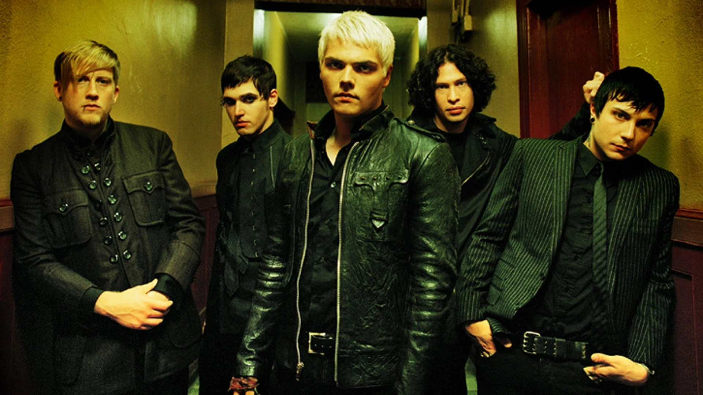
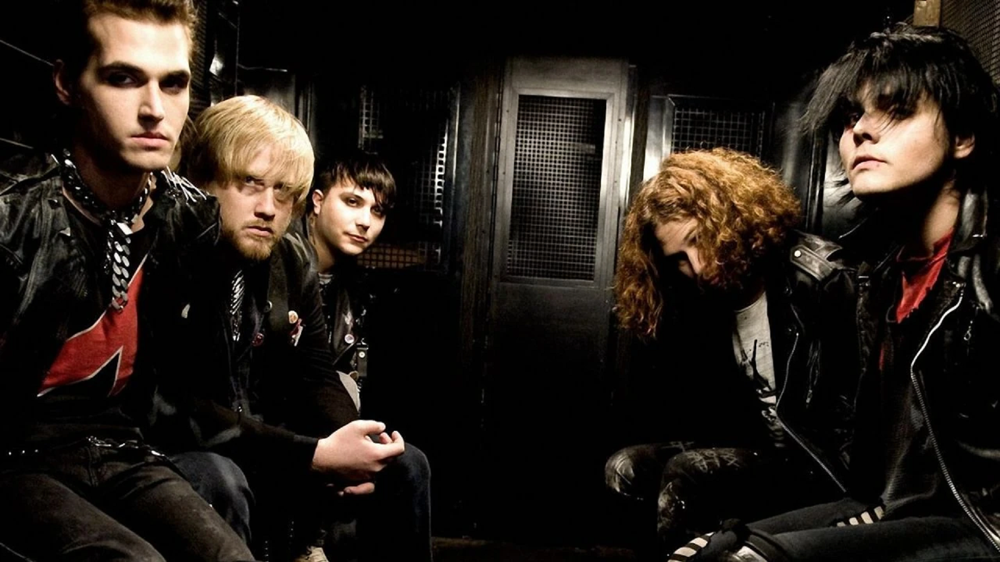

A My Chemical Romance egy amerikai rockzenekar New Jersey államból. Jelenlegi tagjai: Gerard Way énekes, Ray Toro szólógitáros, Frank Iero ritmusgitáros és Mikey Way basszusgitáros. A 2000-es évek egyik legnagyobb hatású rockegyüttesének tartják őket, különösen az emo és pop-punk műfajokban, bár a zenekar maga elutasítja az emo besorolást.
A zenekart 2001 szeptemberében alapította Gerard Way, Mikey Way, Ray Toro és Matt Pelissier dobos, később Frank Iero is csatlakozott. 2002-ben jelent meg első albumuk, az I Brought You My Bullets, You Brought Me Your Love. A zenekar legnagyobb áttörését a 2006-os konceptalbum, a The Black Parade hozta, amelynek kislemeze, a „Welcome to the Black Parade” az Egyesült Királyság slágerlistájának élére került.
2019 októberében bejelentették újraegyesülésüket, és decemberben visszatérő koncertet adtak. A Reunion Tour 2022-ben zajlott és 2023 elején ért véget. 2022 májusában megjelent „The Foundations of Decay” című daluk, amely nyolc év után az első új kiadványuk volt.
New Jersey, 1977. április 9. Vezető ének, dalszezrő
New Jersey, 1977. július 15. Szólógitáros, háttérvokál
New Jersey, 1980. szeptember 10. Basszusgitáros
New Jersey, 1981. október 31. Ritmusgitáros, háttérvokál